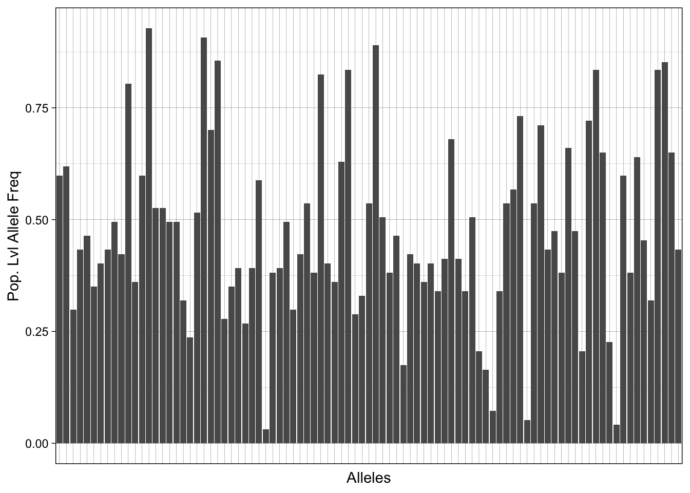
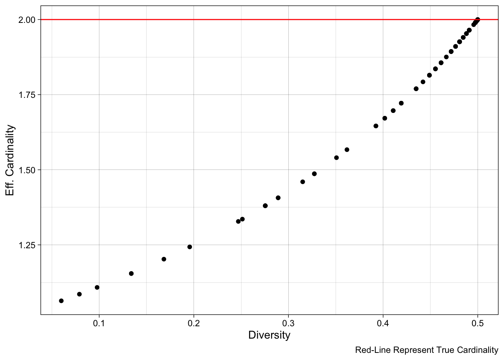
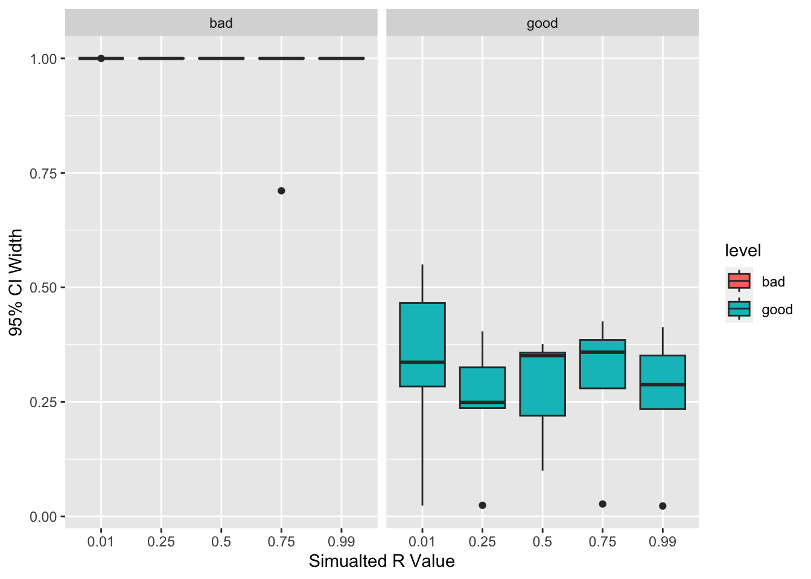

#......................
# vcf and plaf
#......................
# read in the VCF from the main data page
vcf <- vcfR::read.vcfR("../../data/snp_barcode/sangerBarcode_SNP_INDEL_Pf3D7_ALL_v3.combined.filtered.vqslod6.biallelic_snp.Vietnam.vcf.gz", verbose = F)
# convert the data into genotype calls
gtcalls <- vcfR::extract.gt(vcf, as.numeric = T)
# population level allele frequency
# rows are sites/alleles, columns are samples
plaf <- apply(gtcalls, 1, mean, na.rm = T) # apply the mean function across rows ("1" option)
# now bring into a table in needed format for `paneljudge`
pjdat <- data.frame(Allele.1 = plaf, Allele.2 = 1-plaf)
rownames(pjdat) <- names(plaf)
#......................
# going to need genetic positions later
# Extensive data wrangling for genetic position
#......................
POS <- tibble::tibble(CHROM = vcfR::getCHROM(vcf),
POS = vcfR::getPOS(vcf))
POS <- split(POS, factor(POS$CHROM))
ds <- lapply(POS, function(x){diff(unlist(x[,2]))})
# make last pos end of chrom
ds <- lapply(ds, function(x){x[length(x)] <- 1e8; return(x) })
ds <- unlist(ds)Tutorial for Running paneljudge
Terminology
| Term | Definition | |||
|---|---|---|---|---|
| Allele | A genetic state (a specific realization of a variant) | |||
| Site | Also referred to as a locus. It is a genomic location that has more than one state (more than one allele) | |||
| Panel | Collection of alleles. Others may call this a barcode, fingerprint, etc. |
The Data
As input for paneljudge, we will start with a variant call file, abbreviated as a VCF of the Sanger Barcode from Vietnam For paneljudge, we are attempting to determine the “information” contained in each site (and collective sites in a panel). In order to quantify information, we need to know the allele frequency across each site (the frequency that we see each allele at a given site). Given that we are using a monoclonal (simple genetic sample) and biallelic data (alleles have only two possible states), we can take the average across the VCF genotype calls and then the complement for first and second allele, respectively1. Below, we will use vcfR to convert the VCF into a population-level allele frequency matrix. We will then convert the PLAF to a dataframe/matrix with the frequency of each of our two alleles for each site (needed for paneljudge).
Prior to using paneljudge, we can visualize our population-level allele frequencies (PLAF). If the population has undergone significant drift or is inbred, we may expect to see a clustering of PLAF around values less than 0.5 or greater than 0.5 (and more close to 0.1 or 0.9). In contrast, if a population is panmictic with multiple outbreeding populations, we may expect our PLAF values to be closer to 0.5.
tibble::tibble(plaf = plaf,
allele = names(plaf)) %>%
ggplot() +
geom_bar(aes(x = allele, y = plaf), stat = "identity") +
theme_linedraw() +
theme(axis.text.x = element_blank(),
axis.ticks.x = element_blank()) +
xlab("Alleles") + ylab("Pop. Lvl Allele Freq")
Intuition Behind paneljudge
Before discussing the functionality of paneljudge, it may be helpful to build intuition around what gives an allele more information for calculating relatedness.
There are two mains ways to estimate relatedness among individuals: identity by descent (IBD) or time to most recent common ancestor (TMRCA) (see Speed & Balding 2015 for further discussion). The paneljudge package focuses on IBD, which measures the amount of genome (or specific alleles) shared between two individuals (i.e. recent coalescence). If an allele is extremely rare in the population but is shared by two individuals, this carries much more “information” than if individuals shared an allele that was common in the population. For example, if two individuals were 3 meters tall, we may suspect they were more likely to be related to each other versus if they were both 1.7 meters (average height). Similar to height (versus say eye color), alleles that have more variation and “extremes” are more useful than alleles that only have a few states: multiple alleles at nearly equal frequencies (i.e. 10 alleles, each at 10% frequency).
In statistics, we can consider an allele a “set” of potential states, or elements. The number of states that our allele can take, or more formally, the number of elements in our set determines the cardinality. Sites and panels that have a high cardinality (many alleles) are expected to be more informative, particularly if those alleles are equifrequent. However, per Dr. Aimee Taylor, alleles are rarely equifrequent in real life (due to a variety of population genetic forces like drift, selection etc), so it is useful to consider effective cardinality, which is “an allele count that accounts for inequifrequent alleles: it is equal to cardinality if all alleles are equifrequent; otherwise, it is less”.
Using paneljudge
Below, we will calculate the diversity, effective cardinality, and absolute cardinality of our sites.
diversities <- compute_diversities(pjdat)
eff_cardinalities <- compute_eff_cardinalities(pjdat, warn_fs = FALSE)
cardinalities <- apply(pjdat, 1, function(x){sum(x > 0)}) Note, the true cardinality of our data should all be 2, since we have biallelic sites. As a sanity check, we can test this assumption with the code unqiue(cardinalities).
Here, we can compare the diversity versus the effective cardinality of our sites. Notably, per Dr. Aimee Taylor’s package vignette/point above, effective cardinality will scale linearly with cardinality (as it is an adjustment of that original measure) whereas diversity does not have a clear relationship with cardinality. As a result, while diversity is a useful population-genetic statistic, it may not be as reliable of a marker for relatedness “informativeness”.
tibble::tibble(eff_cardinalities = eff_cardinalities,
diversities = diversities) %>%
ggplot() +
geom_point(aes(y = eff_cardinalities, x = diversities)) +
geom_hline(yintercept = 2, color = "red") +
theme_linedraw() +
ylab("Eff. Cardinality") + xlab("Diversity") +
labs(caption = "Red-Line Represent True Cardinality")
Comparing Panels with paneljudge
Panel Competitor
For the purpose of this tutorial, we will make a panel with the same number of sites as the Sanger Barcode but has no information (alleles fixed).
# all alleles fixed, no information
badpjdat <- pjdat
badpjdat[,1] <- 0.99
badpjdat[,2] <- 0.01Using Simulation to Evaluate Panel “Informativeness”
In order to evaluate if a specific panel is useful and informative for determining relatedness in a population, we use simulation to determine if we can capture expected values of relatedness from realizations that are simulated from our panel.
Simulations are created using a hidden-markov model that is described in Taylor et al. 2019, Genetics. We will create simulates at very levels of \(r\) but assume a fixed switch rate, \(k\).
A simple conception of the hidden-markov model is to imagine two samples moving in parallel down a track, where they switch “diverge” and become unrelated based on our switch rate and relatedness factor. The samples can then re-converge again later depending on the switch rate and relatedness. In this way, region of DNA are shared from a common ancestor and sections of IBD are created.
#............................................................
# Function for Making Simulations and Capturing Output
#...........................................................
get_sim_ret <- function(fs, ds, k, r, n) {
# init
out <- c()
# for loops for clarity
for (i in 1:n) { # for each pair
for (j in 1:length(rs)) { # for each relatedness value
# First simulate a new genotype pair
Ys <- simulate_Ys(fs, ds, k, rs[j], warn_fs = FALSE)
# Second, estimate r and k
krhat <- estimate_r_and_k(fs, ds, Ys, warn_fs = FALSE)
# Third, compute confidence intervals (CIs)
CIs <- compute_r_and_k_CIs(fs, ds, khat = krhat['khat'], rhat = krhat['rhat'], warn_fs = FALSE)
# fourth save it out
out <- rbind( c(krhat['rhat'], CIs['rhat',]), out)
}
}
return(out)
}
#............................................................
# Run Sim Capturer on Good and Bad Panel
#...........................................................
# place holders
rs <- c("0.01"=0.01, "0.25"=0.25, "0.50"=0.50, "0.75"=0.75, "0.99"=0.99)
k <- 5 # Data-generating switch rate parameter value
n <- 5 # Number of pairs to simulate per r in rs
ds <- runif(n = nrow(pjdat), min = 1, max = 1e6) # random distances, would actually be based on genomic location
# good panel run
goodpanel_results <- get_sim_ret(fs = pjdat,
ds = ds,
k = 5, # Data-generating switch rate parameter value
n = 5, # Number of pairs to simulate per r in rs
r = rs)
# bad panel run
badpanel_results <- get_sim_ret(fs = badpjdat,
ds = ds,
k = 5, # Data-generating switch rate parameter value
n = 5, # Number of pairs to simulate per r in rs
r = rs) Now we can compare the results of the simulations and expect for the better panel to have smaller (tighter) confidence intervals. Tighter confidence intervals indicate that the panel provided more information that allowed for more precise estimates of relatedness (given the predetermined population allele frequencies).
# drop in R sim values
goodpanel_results_tb <- goodpanel_results %>%
tibble::as_tibble(.) %>%
magrittr::set_colnames(c("rhat", "LCI", "HCI")) %>%
dplyr::mutate(r = sort(rep(rs, n))) %>%
dplyr::mutate(CIwidth = HCI - LCI,
level = "good")
badpanel_results_tb <- badpanel_results %>%
tibble::as_tibble(.) %>%
magrittr::set_colnames(c("rhat", "LCI", "HCI")) %>%
dplyr::mutate(r = sort(rep(rs, n))) %>%
dplyr::mutate(CIwidth = HCI - LCI,
level = "bad")
# now combine for easier plotting
dplyr::bind_rows(goodpanel_results_tb, badpanel_results_tb) %>%
dplyr::mutate(rfact = factor(r)) %>%
ggplot() +
geom_boxplot(aes(x = rfact, y = CIwidth, fill = level)) +
facet_grid(~level) +
xlab("Simualted R Value") + ylab("95% CI Width")
Summary
This tutorial explains how one could use the paneljudge R package for identifying which panel would provide more precise and better inference of relatedness. We walked through how to organize data for paneljudge input, the intuition behind the package, and how to run panel comparisons. Finally, we discuss how to determine which panel may provide more precise inference of relatedness given the inputted population allele frequencies.
Footnotes
Multiallelic sites lack complement p-q properties and would need to be summed respectively↩︎